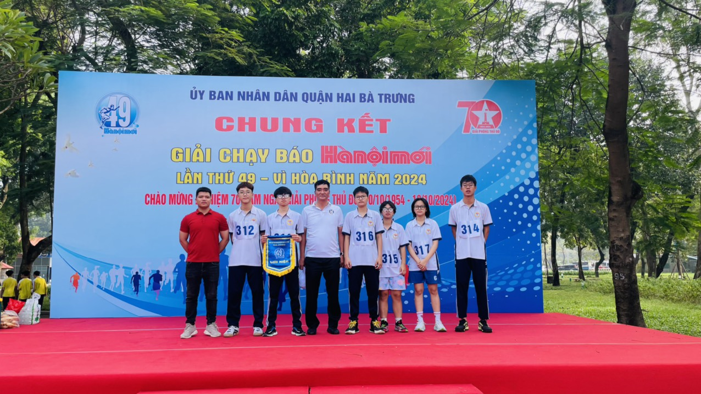

Câu lạc bộ Nghệ thuật Trường THPT Đoàn Kết - Hai Bà Trưng
Tiết 1 sáng và tiết 5 chiều ngày 11/11/2024, tổ Xã hội trường THPT Đoàn Kết - Hai Bà Trưng đã tổ chức chương trình sinh hoạt ngoài giờ lên lớp với chủ đề đặc sắc: Rung chuông vàng - "Khám phá tri thức Xã hội". Đây là một sân chơi trí tuệ sôi động, bổ ích, tạo cơ hội để học sinh thể hiện kiến thức, khả năng tư duy cũng như gắn kết tình thầy trò và bạn bè trong môi trường học đường.
Chương trình mở đầu bằng các tiết mục văn nghệ ấn tượng từ học sinh các lớp lần lượt làm nóng sân khấu. Đặc biệt, màn biểu diễn vũ điệu hiện đại "Nhớ mãi chuyến đi này - Và tôi hát" của lớp 11D7 và điệu múa dân gian "Hoa rừng - Chiếc khăn piêu" từ lớp 12D7 đã để lại dấu ấn sâu sắc trong lòng khán giả. Những tiết mục này không chỉ làm nổi bật nét tài năng mà còn thể hiện sự sáng tạo và tinh thần đoàn kết của các bạn học sinh.

"Hoa rừng - Chiếc khăn piêu" từ lớp 12D7
Sáng ngày 24/09/2024, Giải chạy báo Hà Nội mới lần thứ 49 cấp quận Hai Bà Trưng đã diễn ra sôi nổi với sự tham gia của hàng trăm vận động viên đến từ các trường học, cơ quan, và đơn vị trên địa bàn quận. Đây là sự kiện thường niên nhằm khuyến khích phong trào thể dục thể thao, nâng cao sức khỏe cộng đồng và đặc biệt hướng tới kỷ niệm các ngày lễ lớn của đất nước.
Tại giải lần này, các vận động viên đã tranh tài ở nhiều nội dung chạy cự ly khác nhau, thể hiện tinh thần quyết tâm và sự chuẩn bị kỹ lưỡng. Với khí thế hào hứng, nhiều thành tích ấn tượng đã được thiết lập.
Tinh thần thể thao tỏa sáng tại Giải chạy báo Hà Nội mới quận Hai Bà Trưng lần thứ 49.